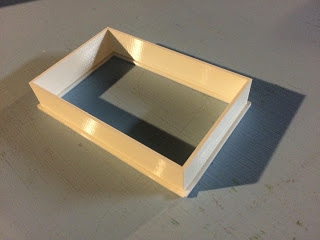
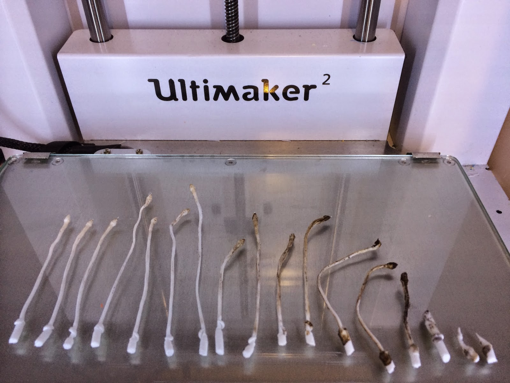
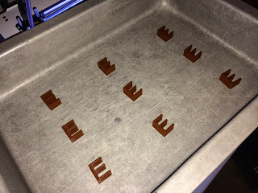
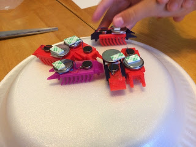

Electric box extender

I have been having trouble with my 3D printer over the last couple of months. It turns out that the fans got disconnected. Once I fixed the problem my printer is working better than ever. I was itching for something to print so I came up with this simple spacer …
read moreUltimaker 2, cleaning a clogged nozzle

So my Ultimaker2 extruding head got clogged, really bad. Something got jammed while printing and I could not get the filament to feed. This had happened once in the past when I tried using some really cheap filament but I am not sure the real root of the problem this …
read moreApril 1st Brownies
An oldie but a goodie with a modern twist. This year I printed out the letter E on my 3D printer using Brown PLA plastic.

Then I put the Brown E's in a baking pan:

Cover with aluminum foil and tell the kids I made brownies for them.

The were …
read more3D Cookie Cutter app comparison
My oldest daughter is in her second year of Brownies. My wife and I volunteered to lead a couple of their meetings with a maker theme. I thought the 3D printer is always a hit and what better project for girl scouts than cookies (yes I realize this is cliche …
read moreLithophanes

I saw my first 3D printer when I was visiting the University of Notre Dame. It was over 10 years ago, it was fairly expensive to operate and it printed in a kind of expensive wax.
Anyway, this was the first time I saw a lithophane. It was a picture …
read moreSnowflake Lithophane
There is something magical about looking at a lithophane. I like handing them to people with the light coming from the front. Most of the time they are polite and say, "that's nice." Then I have them hold the lithophane to let the light come in from the back and …
read moreFish Tank Kids Coat Rack

This one was a lot of fun. We have a coat area down by the back door landing. I used those plastic hooks with the special double sided tape that allows you to remove the hooks without damaging the wall. Unfortunate, the kids managed to pull the hooks off taking …
read moreBug bots

I like the simple fun of brushbots; little robots, typically made with toothbrush heads, that use a cell phone vibrating motor to scoot around a table (you can buy kits here: http://www.makershed.com/products/brushbots). I decided that this would be a great project for me to do …
read moreCoffee table drawer


The kids have really done a number on our living room coffee table. The top has been "distressed" by biting, thrown toys and lots of drumming.

The drawers have also been used as steps to get up on top of the table. Most of the hardware components have broken under …
read more